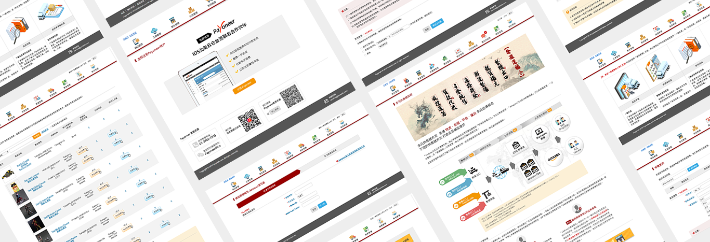

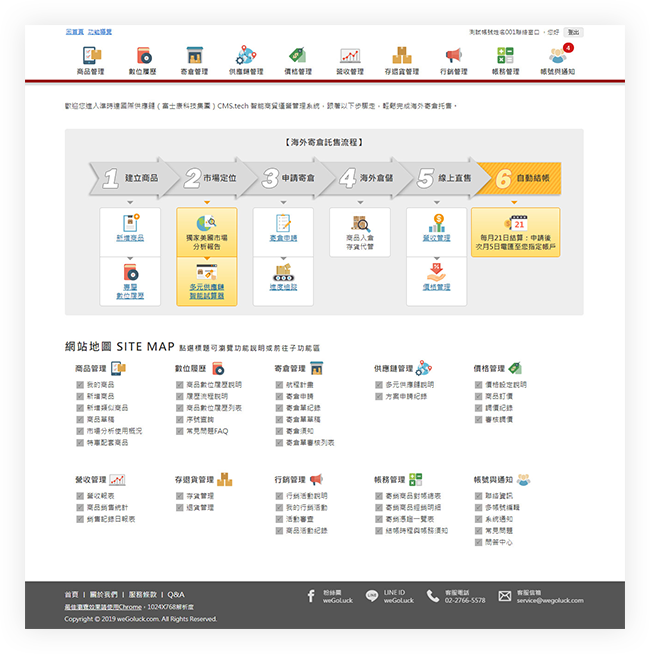
新版導覽首頁
ICON更新
- 面臨問題：
-
- 歷史包袱：系統已有7年以上歷史，近兩年才開始更新與維護。
- 無法做大幅度的更動：使用者多為廠家，年齡層分布皆為中高齡，短時間無法適應大幅度的視覺修改。
- 維護與更新並行：新功能持續上線與更新，只能逐步挑選重要的功能來更新並統一UI風格。
- 解決方法：
-
- 拿掉難以維護的漸層設計：減少顏色與loading問題，並讓選單容易更新。
- 提供4款方案，從立體到扁平化設計：為避免大幅度的更動，提供4種解決方案，給決策者選擇。
- 明確的意象：讓使用者快速地了解功能。
- color
-
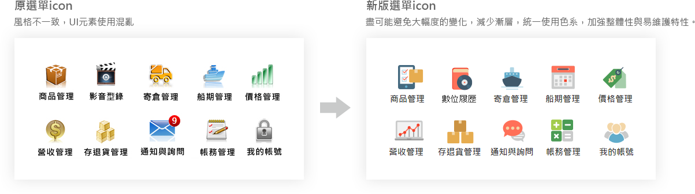
子選單ICON
問題：舊有的子功能選單，風格為擬真寫實ICON，風格過時且維護不易。
礙於時程考量，目前僅針對新功能的子選單做優化設計。
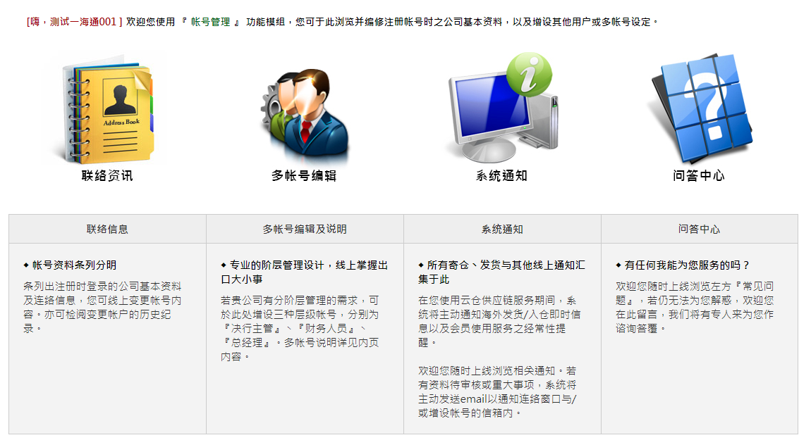
舊版子選單樣式
修改：明確的意象、同時保有原3D風格但拿掉漸層、色系統一
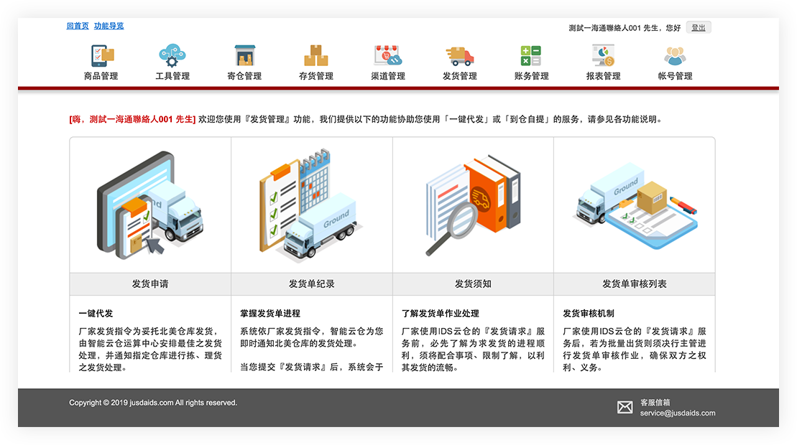
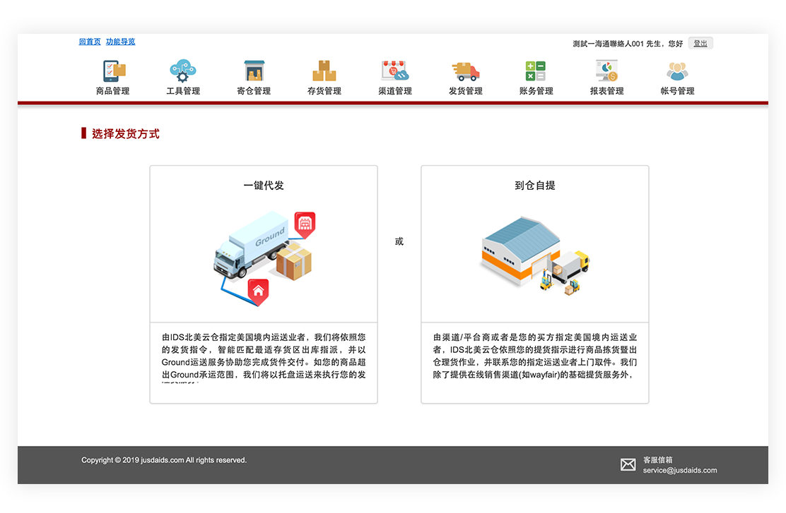
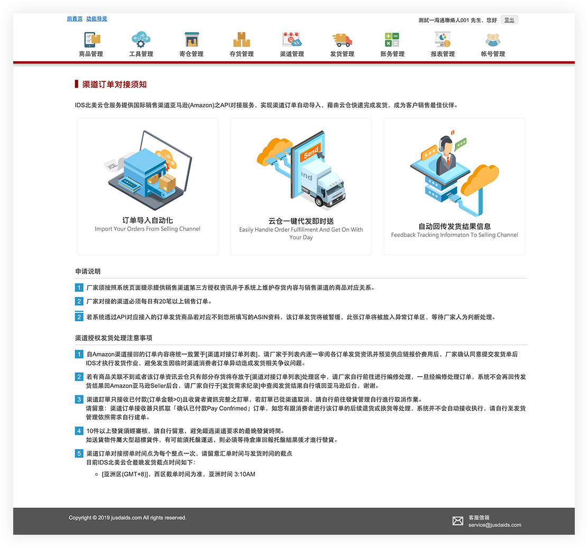
金流服務的串接
在流程的最後，提議增加串接的動態，讓使用者有串接成功的反饋。
一手包辦：UI設計與動態實作
使用連續圖檔以css3技術做動畫效果。
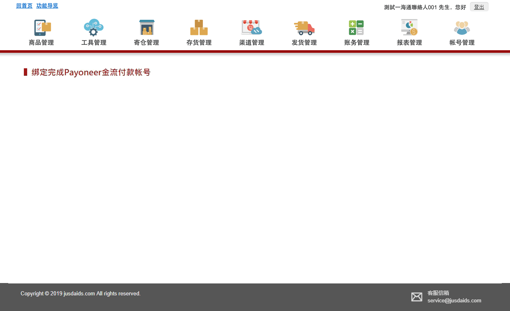
其他相關的綁定流程 ＆ 說明畫面
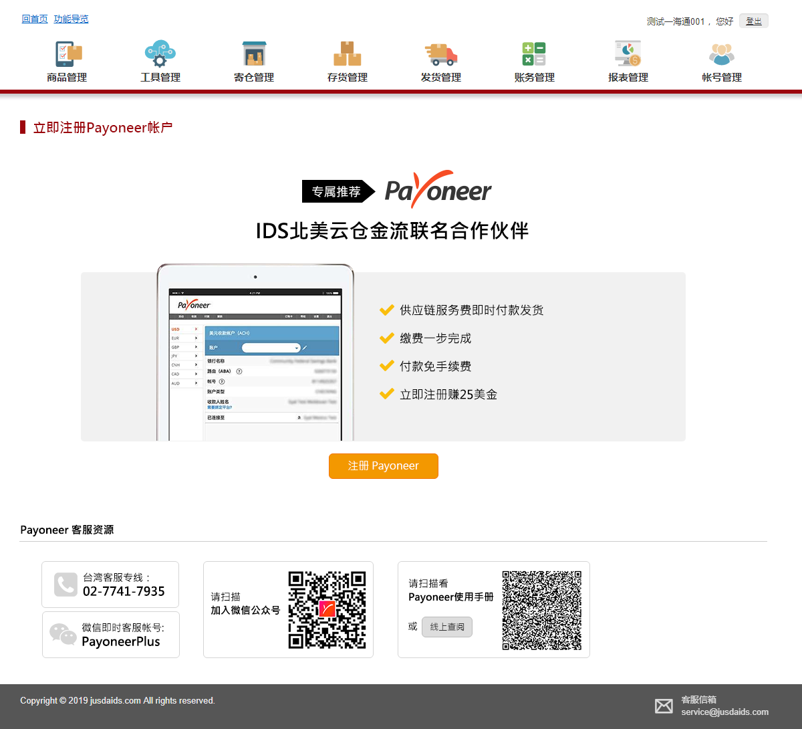
申請發貨功能開發
選擇商品、鍵入基本的發貨資訊
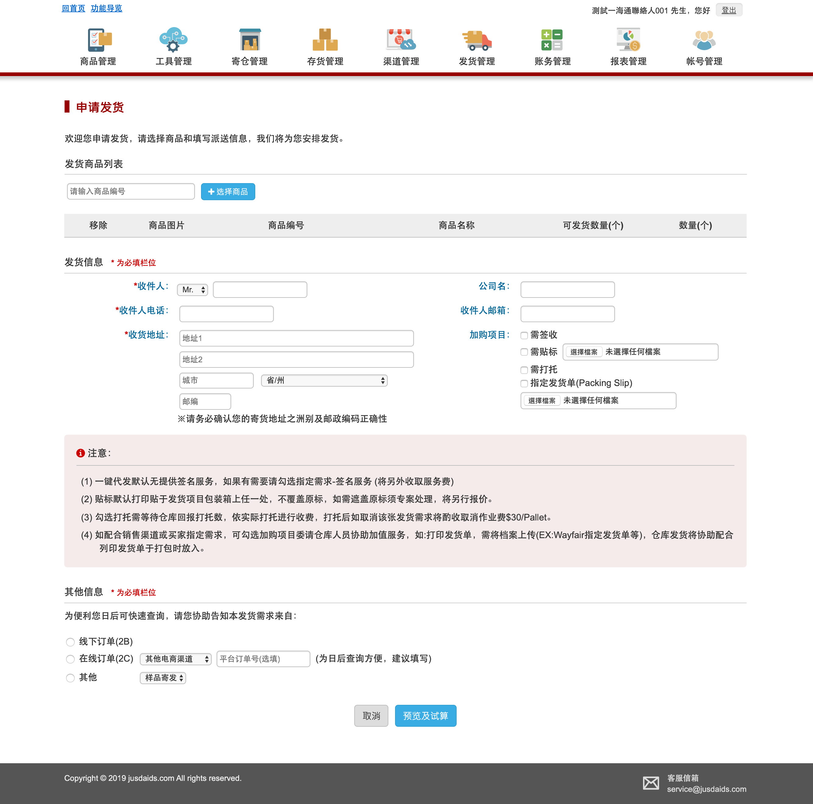
發貨單費用列表示呈現
- 最上方，優先展示所有費用的計算
- 下方展示所有費用的明細
- 所有資訊一目瞭然
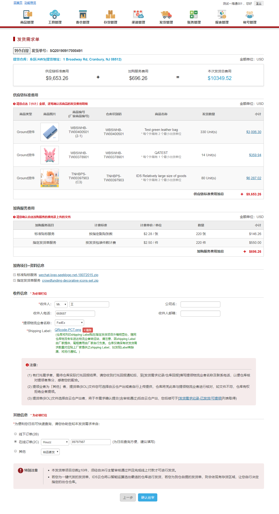
系統持續維護與開發中